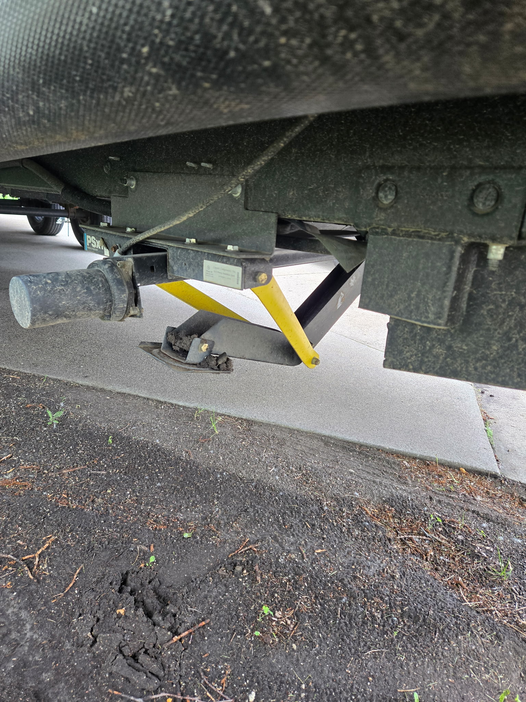
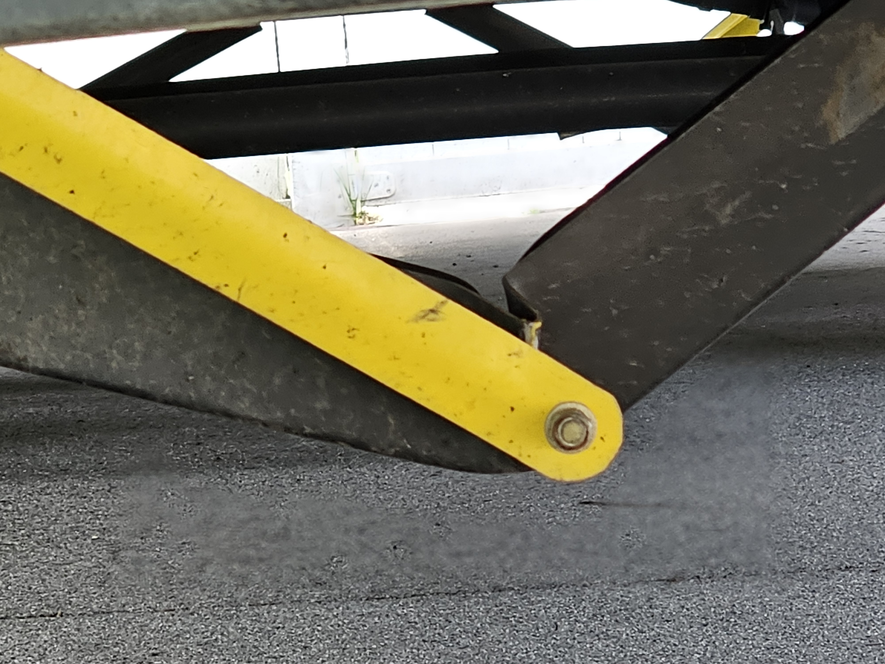

Unfortunately, camping season is in a holding pattern. It's really a bummer to have this season interrupted after we didn't have a season last year, but it seems to be par for the course. It seems like there's some major mishap every year.
After our last June camping trip, a weird accident happened while unhooking, and the camper belly-flopped. Fortunately, hubby was able to dodge out of the way, and none of the cars were in the driveway to be damaged, but the front of the camper jumped five feet to the left and collapsed, absolutely crushing the stabilizer jacks. In the picture above, that black bar is supposed to be absolutely straight, not bent like that. The close up below shows how the black bar now has a gap in it that isn't supposed to be there.

So, until the camper place gets the parts in, my camper is once again a big fricking paperweight beside my driveway. This time, it's a terrifying paperweight, because the only thing holding/stabilizing the front end is the front tongue jack.
I just have to keep repeating to myself: I love camping, and even though there seems to be a dangerous and costly mishap every year, it's still worth it. It's getting harder and harder to convince myself anymore, though. The blown tire on the freeway with cars zipping by at 80 mph seems tame now compared to the awning mishap of 2024 and this most recent accident.

The writing update
With all the other things going on, I have had little time to write. I've been playing with a couple of ideas for new stories, but I haven't gotten any editing or resubmitting done. Now that my summer class is done, I hope to get back to a focusing on "Ink and Moss summer."
At the last meeting of my local writer's group, we did some fun little writing exercises, and I came up with a story idea I want to pursue for a bit and see if anything comes of it.
What I'm reading
For my regular book club, I finished Lost Souls Meet Under a Full Moon, by Mizuki Tsujimura. I was pleasantly surprised. It's way outside of my normal reading, but I actually enjoyed it. And I didn't see the twist in the story, so that was refreshing. I'm also counting this book toward the NY Times Challenge for the challenge point, read a book in translation.
Next up for regular book club is The Thief of Always, by Clive Barker. I haven't read any Barker for a bit, and I've never read this one, so I'm looking forward to it!
For the horror book club, I finished Camp Damascus, by Chuck Tingle. It wasn't bad! I wasn't anything like I expected. It was weird, which is a compliment!
The July read for horror book club is Ghost Station, by S.A. Barnes. I already finished it, which means it was obviously a pretty good read, lol. It's science fiction horror, without being too heavy on the science. It's also not super scary. I'd call it "mildly frightning with a touch of the eldritch.""
July's Lit League Challenge is to read a book about or written by someone with a disability. I've picked The Electricity of Every Living Thing, by Katherine May. It's a book about the author receiving her autism diagnosis later in life and how it causes her to re-examine everything she thought she knew about herself and her life. I'm looking forward to reading it! 😉 I'm also counting this one toward the NY Times Challenge point, check out and read a book from your local library.
For the NY Time Summer Reading challenge, I read (listened to, actually)Pastoralia, by George Saunders (challenge point: read one of the NY Times's best books of the 21st Century). While I enjoyed his novel Vigil, I tend to get lost when it comes to his short stories. I think I'll stick to his novels.
I also read Yesteryear, by Caro Claire Burke (challenge point: read a book published in the last year). Let me tell you, that was a ride. It's a book about a tradwife influencer, and I dived into the book greedily waiting for the moment she gets her comeuppance. But then it gets weird, and she thinks her daughter is Jesus, which made me think, "OH NO! Have I misinterpreted this book, and it's really about a tradwife influencer getting her redemption?" (Not intrested in THAT, lol!)
But then the truth is revealed...and it's so much worse than a comeuppance. It's bonkers. And you actually feel a little bad for the bitch. And then the ending is just...so strange.
You can read a Times review of it here (not sure if this is behind the paywall or not): NY Times review of Yesteryear.
So it kept me riveted, but I still can't decide if I enjoyed it or not! Sometimes those are the best books: the ones that make you come back and think about them, again and again. I may have to read this one a couple of more times before I actually decide if I like it or not.
And for the next reads in the NY Times Summer Reading challenge, I'm reading Dune, by Frank Herbert (challenge point: read a really long book). I would classify Dune in as a high fantasy space opera, which normally I don't like, but for some reason, it works for me with Dune. This book I love. I have never read the others in the series, but that's partly because I'm afraid they might negatively impact my feelings about the first book.
Also for the NY Times challenge, I'm reading Clara and the Sun(challenge point: read a book that's been adapted for the screen), and Strangers(challenge point: listen to an audiobook). I thought I'd really like Clara, but I'm pretty lukewarm about it. I'm enjoying Strangers more.
Once I finish these latest two, I'll have completed 7 out of 10 items on the NY Times Challenge list!
I'm doing terrible on the adult summer reading challenge in beanstack (local library challenge) because I always forget to log my time! I read at least an hour a day, but I continually forget to log it. I met the original challenge goal of 960 minutes, but I'm trying to make it a habit to keep logging my hours until the end of the challenge.
What I've been watching
Just like writing, I haven't watched diddily. I usually try to watch at least a couple of movies while camping, but I haven't done it yet this season.
Education update
My summer class at the university is done and over. After a rocky start, I came to enjoy the way the class was organized and I actually learned a lot that I can use in my current job.
I only had three issues with the class. The first was the mystery of the modules we couldn't see, which we found out was because parts of the class were still set to "invisible to students." That was quickly resolved.
The second was a minor concern. I took a quiz and got a question wrong. The class allows you re-take quizzes, which I love. When I take a quiz, the answers I get right are things I obviously already know. Getting things wrong and then being able to correct them reinforces those things I didn't know (or forgot) so they are "absorbed" in my brain. I learn better by being able to have mulligans.
So I took the quiz again. There was one question I had been slightly uncertain (but pretty sure) about, so I figured that was the one I got wrong. Nope. My score got worse. Now I had two questions wrong. This was a Saturday, while we were camping, so I just retook the quiz back to my original answers and figured I'd move on. My one wrong was good enough, and I had camping to do.
Ha! Like I could let be!
It was eating at me, so a few days later, I decided to try again. Seven times. And I could never get the score any higher. Instead, it got worse. So then I was faced with the dilemma of, do I email the professor? It's hard not to come off sounding arrogant: "Excuse me, but I can't seem to get better than a B on the quiz. I think there's something wrong."
On the other hand...what if there was something wrong? We were already well into the class when I emailed about the missing modules, and no one else had emailed her. So the other students might do the same here, and we all just accept a lower score due to no fault of our own. This is that "touch of 'tism" thing where the compulsion for fairness is impossible to resist.
So I emailed the professor, trying to make sure to word the email so she knew I could be wrong, and this whole thing just could be because I'm not understanding one of the questions, and I asked her if she could let me know which one I was getting wrong so I could revisit the topic in the materials.
It was the last question. Almost every question the whole semester was multiple choice, select one radio button. The last question on this quiz had checkboxes and you were directed to "choose all that apply." The one that I chose was the single correct answer, but the answer key was broken (probably due to the change in format). It wanted you to check all four answers, which would cause the autograder to score it correctly, but which was also actually wrong.
So it wasn't me!
The professor fixed it quickly (she's incredibly responsive to emails, another thing I like about the class), and I was glad I had spoken up.
The third issue with the class may be a result of the class being so condensed for summer. During the fall and spring semesters, or during a full summer session, it may not be a problem: nothing, other than the quizzes that are autograded, gets graded or receives any feedback. Though I can't find anything on it now, I remember seeing somewhere that the semester's work added up to 1000 points; and right now, my gradebook is showing 100 completed (which means 900 points ungraded).
We did 11 quizzes, ten of which were autograded and one had that needs to be manually graded. We had a midterm exam that needs grading. We had four case study that need feedback/grading. We had a large final report that needs grading (it's the final project, so I wouldn't expect feedback on it). And we had 10 discussion/reply posts, which are probably the ones that most needed feedback and grading.
Almost every semester, there's a portion of the class that misunderstands the assignment. That's why I appreciate early feedback, so you can redirect if you are doing things wrong. No feedback means you carry the error throughout the whole semester. And it's not a matter of, "Well, you should ask," because it's really a matter of you don't know what you don't know. Nobody goes, "Oh, crap, half the class is doing this differently," until you are well into the semester, and then it's a little late to course correct.
For example, our discussion/reply assignments are supposed to be that you sort of create a blog post or journal reflecting on the week's readings. Then you reply to one of your classmate's posts for that week. Discussion/reply.
But other professors have done it as "you discuss one week, reply the next." And there were a couple of students who were following that pattern, but that's not how I read the assignment.
Also, I interpreted the assignment as we react to the readings, journal-style, relating them to our own experiences. Other students interpreted it as "summarize in your own words the readings of the week." Obviously, some of us are wrong, but we don't know which group is without the feedback.
So I would highly recommend the class, but I would also recommend taking it during a standard semester.
Also, a thing I don't like about the early/short summer session: I'm pretty sure grades aren't due until the end of the summer, at the same time as the normal summer sessions. So I'm going to have absolutely zero idea of what my grade is until mid- or late August!
I've found some discrepancies on my transcript (like 0 credits for the class I took last semester) that I need to check in with my advisor about to make sure I'm still on track to graduate in the spring. I think it's just a problem with the system. It's that class I took before, thirty years ago, that I retook since tech is so different these days. I passed it back then (and did now, too), but it probably through the auto system for a loop because why would I be re-taking a class I already passed? So it didn't grant any credits. I'm sure it should be an easy issue to correct.
Aside from Duolingo Spanish, I haven't been doing many of my other non-university courses. The university course kept me too busy.
Website update
Part of the point of this blog being hosted in this odd way was so that I could practice my HTML skills and make my website exactly how I like it. Or, even better, to even make it look like it did over a decade ago, before the design was deprecated by the original hosting company.
Unfortunately, that plan fell by the wayside. Part of it was time, and part of it is the frustration over struggling to recreate the original design. I had no control over any of the html of the original site, so I'm starting from scratch with it. It's been a year or two (or more?) since I did any redesigning. I moved the html to a free site a while ago, and that's been the only change!
But now, since I'm learning vibe coding, I have it on my radar to use AI to help me do the coding to recreate the site. So the redesign and webwork is back on my radar...it's just a matter of finding the time to work on it! So hopefully, you might start to see some changes to the design again in the future!
This month's playlist. The ten songs I'm listening to on repeat.
- Animal Style
- Sail
- The King
- It's Tricky
- Mistadobalina
- Flowers
- Empire State of Mind
- Freaks
- Pretty Fly (For a White Guy)
- And since Pretty Fly has the lyric: Ricki Lake
- And a bonus track because it came on while I was writing this post and I absolutely can't resis to dancing to it. DONTTRUSTME
That's it for this month. Until next month, Stay Spooky, my friends!

~~Here be monsters . . . and corgis.~~